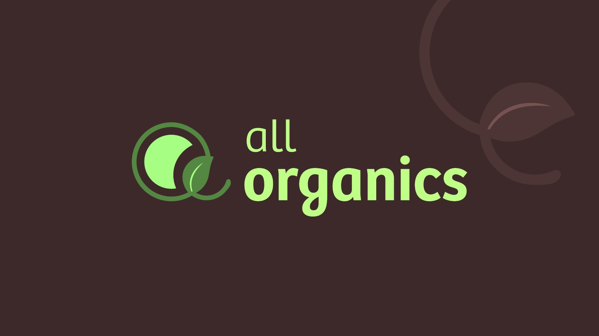
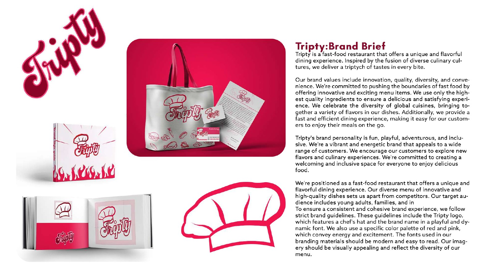
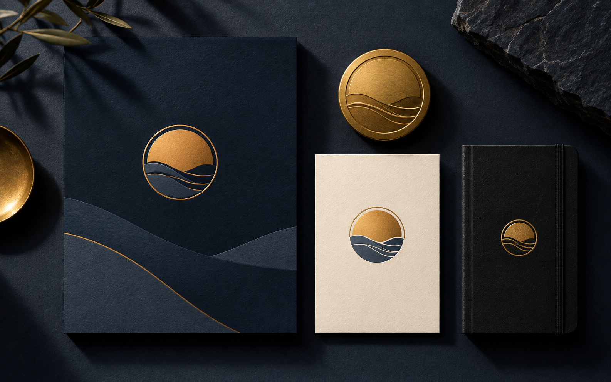
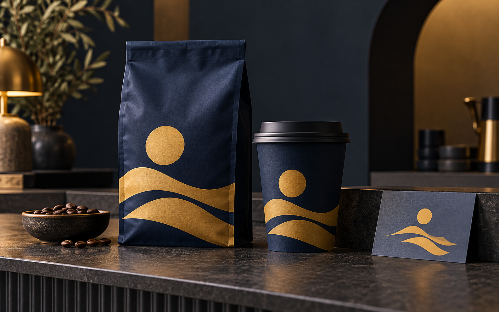
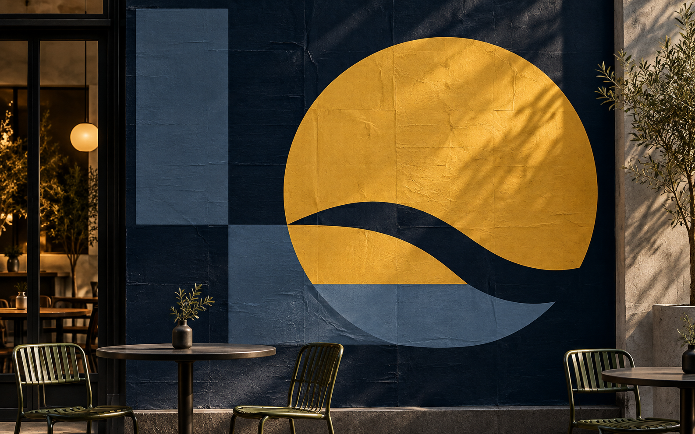

Independent design studioDhaka · Working everywhere
Identity · Packaging · Campaigns · Social
Make the
idea visible.
Design with a point of view, built to hold together wherever your audience meets it.


01 / ALL ORGANICSFresh
ideas
grow.identity / packaging / digital
ideas
grow.identity / packaging / digital
JULKARNINE ARABI · PORTFOLIO 2026Make the
brand
matter.Dhaka · identity to campaign
brand
matter.Dhaka · identity to campaign
ORIGINAL
WORK✳
WORK✳
Scroll to exploreOne idea. Many useful forms.DD / 001
Identity✳Packaging✳Posters✳Social✳Web✳Identity✳Packaging✳Posters✳Social✳
Selected work / 01
Make it
recognisable.
Identity systems, objects, and campaigns that keep the same character from the first glance to the daily feed.
All Organics / Brand identityFresh ideas
grow.
grow.

Tripty / Food brandFreshand friendly.
 Noréa / Luxury lifestyleQuiet
Noréa / Luxury lifestyleQuietelegance.
 Bhumi / Rice productsRooted
Bhumi / Rice productsRootedin care.
Concept work built in the studioBring a brief ↘
The studio / 02
Start with
a clear thought.
Small team, direct conversation, careful files. We build the core idea first, then give it enough structure to keep working.
01
Find the direction.
We look at the category, the audience, and the moment your business is in.
02
Build the system.
We turn the direction into a mark, palette, type, and a few rules people can actually use.
03
See the services ↘Make it useful.
We shape the real assets: posts, packaging, posters, and the files that keep the work moving.
 01 / The sketchIt starts
01 / The sketchIt startson paper.
 02 / The systemThen it
02 / The systemThen itfinds a voice.
 03 / The worldNow people
03 / The worldNow peoplesee it.
The design process / 03
From first
thought to proof.
Six deliberate moves. One visible thread. Scroll through the stack to see how a rough question becomes work a client can use.
A clear route through the studio
the question.Notes, references, a useful first mess.
strong thought.Several routes, one worth following.
visible early.Rough lines reveal what matters.
precision.Illustrator, Photoshop, and a real system.
something useful.Organised files, confident client, clear next step.
earn attention.A consistent idea, doing its job in the world.
0106
Useful formats / 04
Carry it
everywhere.
Choose the pieces you need now. Build the wider system as the business grows.

A visual language with a pulse.
Logo suite, type, colour, and a short guide for the everyday decisions.

Make the shelf feel like yours.
Labels, boxes, bags, and the small details people remember in their hands.

Give the idea a place to speak.
Posters, launches, and social sets with one clear thought running through them.
Your move / 04
Got a
good
feeling?
Tell us what you are building, where it feels stuck, and what needs to become clearer.
Based in Dhaka, Bangladesh.Design that shows up for your business.© 2026 Design Daily